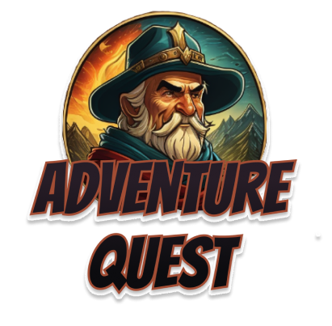

"Adventure Quest" é um jogo de aventura em mundo aberto onde você explora como herói, enfrentando desafios em batalhas por turnos contra monstros. Escolha entre diversas classes de personagens, evolua com experiência e novas habilidades enquanto desvenda mistérios e obtém equipamentos poderosos.
- Escolha de Personagem: No início do jogo, os jogadores escolherão um personagem entre diferentes classes, cada um com suas habilidades e estilos de jogo únicos.
- Exploração do Mundo: Os jogadores serão livres para explorar o mundo mágico, viajando por terras distantes, florestas encantadas, montanhas imponentes e masmorras sombrias.
- Combates e Enigmas: Durante a exploração, os jogadores encontrarão monstros para combater e enigmas para resolver. Eles precisarão usar suas habilidades e inteligência para superar esses desafios.
- Evolução do Personagem: Conforme avançam no jogo, os jogadores ganham experiência e podem melhorar seu personagem, desbloqueando novas habilidades e melhorando suas estatísticas.
- Tomada de Decisões: O jogo permitirá que os jogadores tomem decisões que influenciarão o desenrolar da história, proporcionando uma experiência única e personalizada para cada jogador.
- Conquista de Tesouros: Ao derrotar monstros, resolver enigmas e completar missões, os jogadores conquistarão tesouros valiosos que os ajudarão a se tornarem heróis ainda mais poderosos